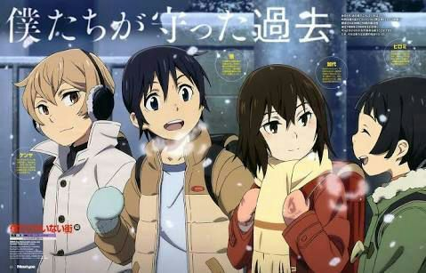
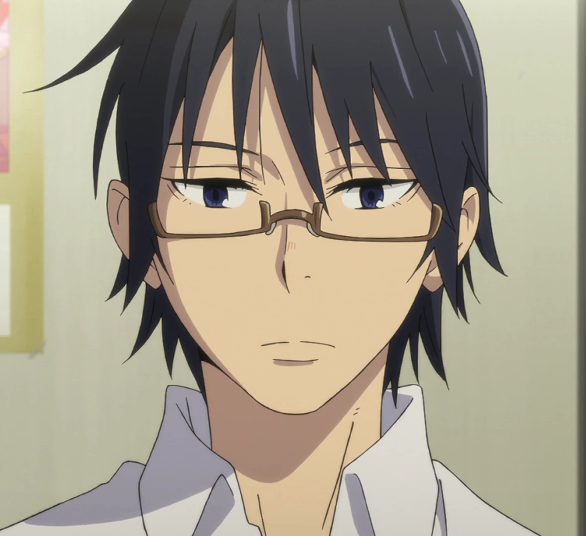
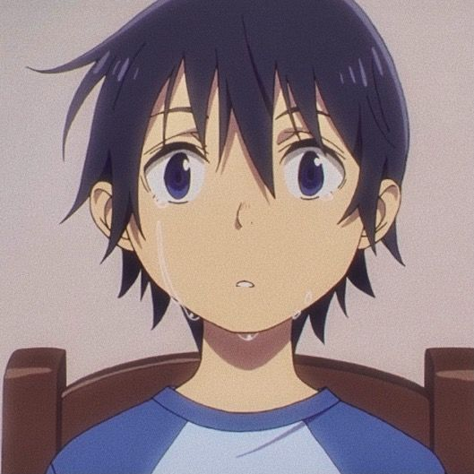

Sinopse
Erased, também conhecico como Boku Dake ga Inai Machi, é um anime que acompanha Satoru Fujinuma, um jovem com a habilidade de voltar no tempo para impedir tragédias. Após a morte de sua mãe, Satoru é enviado 18 anos ao passado, para a época em que três colegas de classe foram vítimas de sequestros e assassinatos. Ele usa sua habilidade para tentar evitar esses crimes e descobrir o verdadeiro responsável, buscando entender o que aconteceu no passado para mudar o presente.

História
A história gira em torno de Satoru, um mangaká que possui um poder incomum: ele é capaz de voltar alguns minutos no tempo para impedir que desastres aconteçam. Este fenômeno, chamado "Revival", se manifesta quando algo ruim está prestes a ocorrer, forçando-o a tentar mudar o futuro. Quando a mãe de Satoru é assassinada, ele é inexplicavelmente enviado de volta 18 anos no tempo, para quando tinha 10 anos e vivia em sua cidade natal, época em que três crianças foram sequestradas e assassinadas. Determinado a salvar sua mãe e as vítimas, Satoru investiga os crimes e o culpado, enfrentando desafios que testam sua coragem.

Personagens




Lista de Episódios (2016)
| # | Título | Exibição original |
|---|---|---|
| 1 | "Brilhando Diante dos Meus Olhos" "Sōmatō (走馬灯)" | 8 de janeiro de 2016 |
| 2 | "Palma da Mão" "Tenohira (掌)" | 15 de janeiro de 2016 |
| 3 | "Marca de Nascença" "Aza (痣)" | 22 de janeiro de 2016 |
| 4 | "Realização" "Tassei (達成)" | 29 de janeiro de 2016 |
| 5 | "Portal" "Tōbō (逃亡)" | 5 de fevereiro de 2016 |
| 6 | "Ceifador" "Shinigami (死神)" | 12 de fevereiro de 2016 |
| 7 | "Fora de Controle" "Bōsō (暴走)" | 19 de fevereiro de 2016 |
| 8 | "Espiral" "Rasen (螺旋)" | 26 de fevereiro de 2016 |
| 9 | "Encerramento" "Shūmaku (終幕)" | 4 de março de 2016 |
| 10 | "Alegria" "Kanki (歓喜)" | 11 de março de 2016 |
| 11 | "Futuro" "Mirai (未来)" | 18 de março de 2016 |
| 12 | "Tesouro" "Takaramono (宝物)" | 25 de março de 2016 |